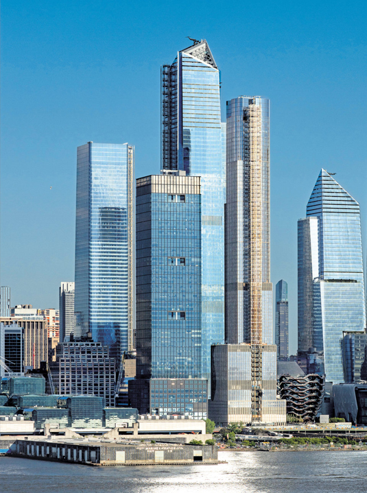

Lesson 3
Skycrapers
How did skyscrapers get popular?
During the late 19th century, technology was finally advanced enough to build steel frames for buildings. This made it possible to build buildings higher and stronger than ever before, because steel was lighter than materials, allowing buildings to remain stable during high winds. Developers and Architects were pressured to build skyscrapers because there was a high demand for space in crowded cities. Business owners wanted to keep their factories in well-established areas and maximize the use for their land by building as high as possible. The first skyscrapers were being built around the 1880s. They were mainly made out of stone and brick with small windows, and they weren’t very tall compared to skyscrapers you see now. Because the prices of creating these buildings were so high, there was less money spent on decoration and most early skyscrapers looked plain, although some of them had a few ornaments on them like cast iron entrances and decorative and colorful bricks and tiles.
Home insurance Building (1885-1931) One of the first skyscraper ever.
Skyline of New York, featuring modern skyscrapers.
By the 1950s, the look of skyscrapers developed to be more like what you’re familiar with now. Spearheading this look was architect Mies van der Rohe who designed buildings with mainly glass walls rather than concrete. He also uses clean sharp edges and a repetitive design to emphasise the vertical aspect of the building. This trend continues with skyscrapers being built today.


Here is a brief overview of the styles and topics we learned:
Renaissance
- Used golden proportions
- has a lot of columns
- Uses a lot of marble
Neoclassical
- Used golden proportions in their buildings
- Architectural result of mass rejection of monarchy and church authority
Industrial
- Used newly discovered materials made possible in the industrail revolution
- Used by nations to show their technological power
Art Nouveau
- Uses lots of curves in the architecture
- Reaction to the industrial style
- Reaction to the industrial style
Skycrapers
- Made possible with steel frames
- Does not have much decorations
- Does not have much decorations